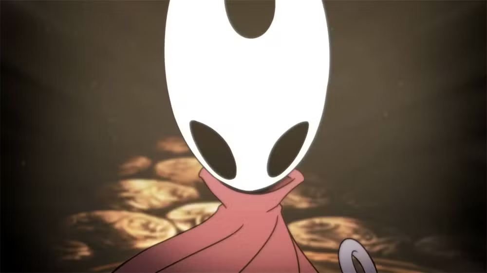

Segredos de Hallownest
Hollow Knight esconde diversos segredos fascinantes, salas ocultas e detalhes de história que muitos jogadores acabam deixando passar.
Hollow Knight esconde diversos segredos fascinantes, salas ocultas e detalhes de história que muitos jogadores acabam deixando passar.

Arquivos de Hallownest
Antes de se tornar o sucesso que conhecemos, o jogo foi criado originalmente durante uma competição de desenvolvimento chamada Ludum Dare (ou Jam) sob o nome Hungry Knight.
O Wiki Hollow Knight aponta que a Team Cherry se inspirou em clássicos como Super Metroid, Zelda II e Castlevania: Aria of Sorrow, enquanto a fluidez de movimento veio de Mega Man X.
O personagem principal não é o Hollow Knight. O nome "Hollow Knight" refere-se a um dos chefes finais do jogo, enquanto o personagem que você controla é apenas chamado de "The Knight" (O Cavaleiro).